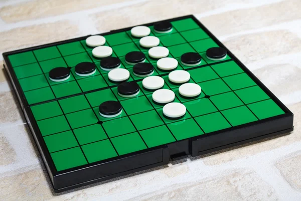
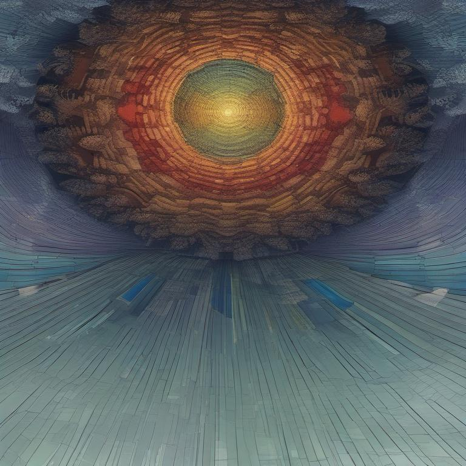
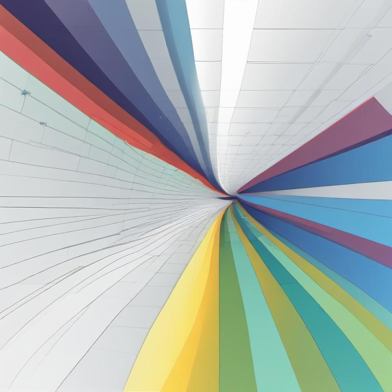
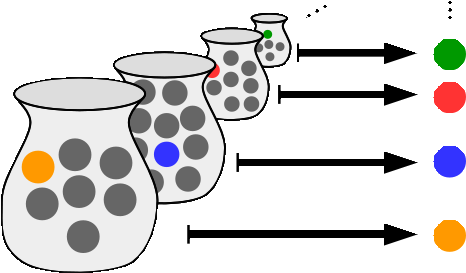

Cold Reflections
Thoughts
About
Categories
All
(9)
algebra
(1)
artificial general intelligence
(1)
artificial intelligence
(2)
biology
(1)
cognition
(1)
interpretability
(1)
isi
(1)
machine learning
(2)
math
(6)
philosophy
(2)
probability
(1)
probability theory
(1)
set theory
(1)
statistics
(2)
Ideas on DNA Storage
biology
machine learning
Recently, I have been thinking about the DNA storage problem quite a bit. It’s been something extremely interesting to me. Asking ChatGPT for DNA storage system use-cases…
Mar 25, 2025
Himadri Mandal
Some Important Results in Probability Theory
probability
math
Proof.
Mar 17, 2025
Himadri Mandal
Language is an Infinitely Incomplete Approximation of Human Concepts
philosophy
cognition
math
I had thought of this idea last year, but never got around to writing it. In this blog, I show how humans are infinitely limited by the mode of language in transmission of…
Mar 13, 2025
Himadri Mandal
How to get AGI?
artificial intelligence
artificial general intelligence
philosophy
Here is an excerpt from a brilliant conversation
1
between Dwarkesh Patel and François Chollet.
Jul 6, 2024
Himadri Mandal

Ponderings on OthelloGPT
machine learning
artificial intelligence
interpretability
This is a report of sorts of my playing around with OthelloGPT, a GPT model trained on Othello games to predict all the possible legal moves.
May 5, 2024
Himadri Mandal

So Far Yet So Close: How Independence is Almost Dependence
probability theory
statistics
math
Imagine two continuous random variables seemingly unrelated and free from any influence from each other. It’s a common assumption in probability theory that independence…
Mar 4, 2024
Himadri Mandal

\(k+1\)
points uniquely determine a
\(k\)
degree polynomial: A cool problem
algebra
math
Reading the title: you are probably shouting “Lagrange Interpolation!!!” Yeah, sure, Lagrange is cool. But I will show you something cooler which ensures you don’t have to…
Dec 10, 2023
Himadri Mandal

Axiom of Choice, the Zorn’s Lemma, and the Foundations of Mathematics: Set Theory Part I
set theory
math
Mathematics has long been built on the sturdy foundation of intuition. From counting pebbles to solving complex equations, mathematicians have relied on their inner compass…
Nov 16, 2023
Himadri Mandal
Shannon’s Card Magic Trick
isi
statistics
math
This was my statistics project at ISI Sem 1. My team had:
Myself
,
Siddhartha
,
Ayan
,
Drishti
,
Aman
,
Mrittika
. Thanks to everyone for their efforts.
Oct 23, 2023
Himadri Mandal
No matching items